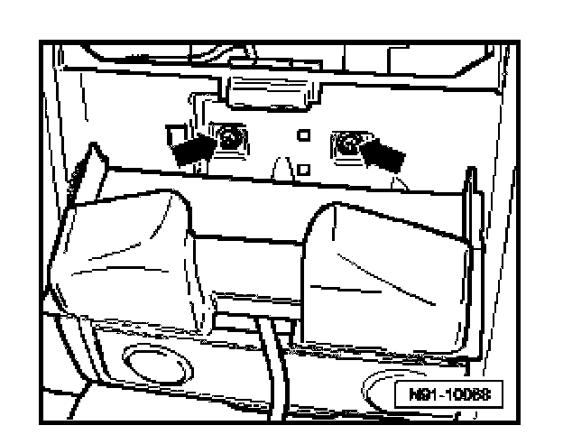
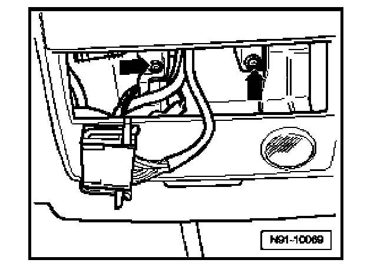
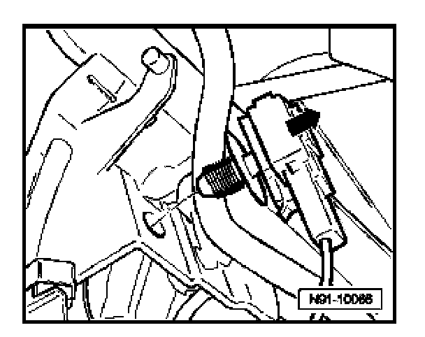
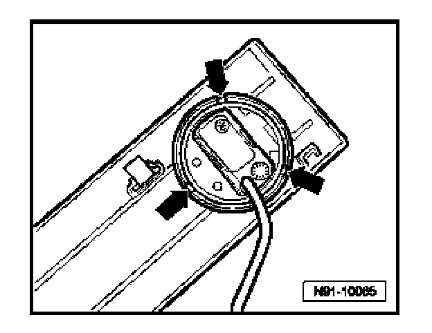

Telephone Microphone -R38-, Removing and Installing
Telephone Microphone -R38-, Removing And Installing
Telephone Microphone -R38- is integrated with front interior light module.
Removing
CAUTION:
Before beginning repairs on the electrical system:
- Switch off all electrical consumers.
- Switch ignition off and remove ignition key.

- Where equipped, open sunglass storage and remove screws.
- Remove front interior light module

- Remove screws -arrows-.
- Remove complete interior light unit.

- Unclip connector from frame in direction of -arrow-
- Pull up connector lock -1- and disconnect electrical connection for microphone.

- Depress retainer clips -arrow- and remove microphone from frame.
Installing
Install in reverse order of removal.